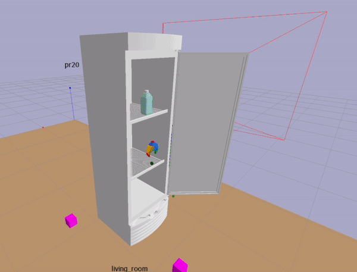
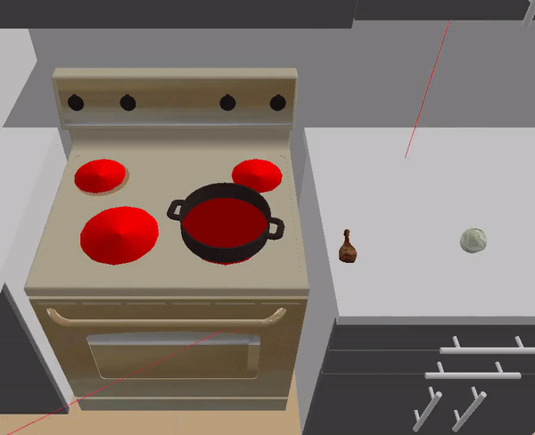
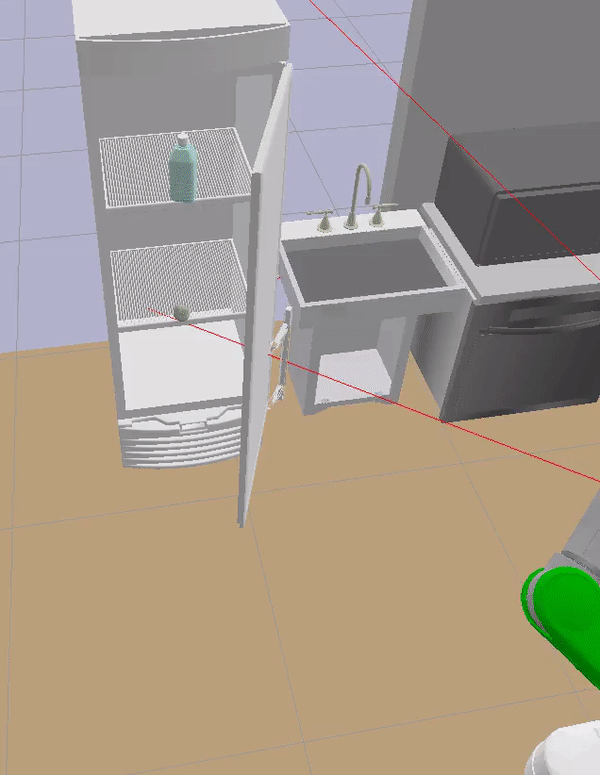
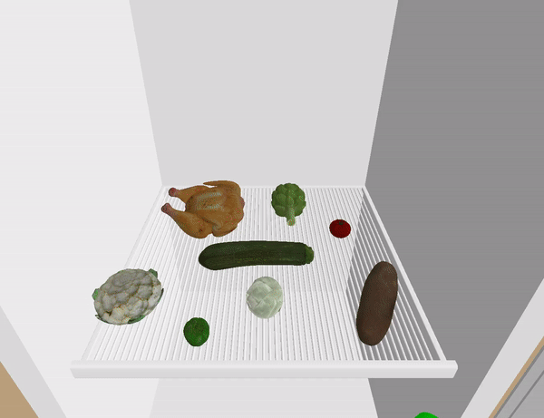
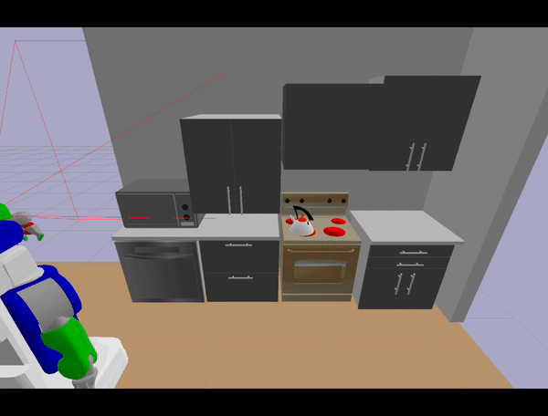

Challenges of Real-World TAMP Problems#
To make general-purpose robotic assistants, we need to enable them to achieve long-horizon goals in large and complex environments. Task-and-Motion-Planning (TAMP) [1] involves finding continuous robotic commands for achieving discrete symbolic goals.
|  |
The GIF on the left shows how the planner finds all the samples for a pick action: 1. sample the grasp pose with an approach pose (visualized as the hovering gripper) 2. sample a base configuration that might reach the object (visualized as pink boxes) 3. plan the arm trajectory to move to approach conf using bi-RRT |
Let's first consider the challenges in the setting of a fully observable world and perfect execution.
Interactions of Downstream Samples#
The GIFs below show examples of how downstream samples interact in ways that make a task-then-motion planner inefficient and that an interleaved approach to TAMP planning is most desirable (trading simulation planning time for robot execution time).
|  |  |
| The placement pose of the turkey leg `p1` shouldn't make it infeasible to sample placement pose of the cabbage `p2`. Otherwise, the robot needs to spend execution time correcting `p1` when it's time to place cabbage. | The joint position the door determines the collision-free space for actions afterwards. If the door is opened too narrow, no arm path can be found to reach the cabbage. If the door is opened too wide, no base configuration can be found to reach the faucet. |
Large State Space#
It's a desirable to have general-purpose robot assistant that can purposefully interact with a variety of objects in the environment with a set of basic skills. But planning becomes slow given a lot of rigid and articulated objects, whose poses and joint positions constitute the world configuration.
|  |  |
| Movable objects slows down planning because they are included in collision checking after motion planning instead of during it. However, not all movable objects used during the problems need to be considered movable for the duration of planning. For example, the milk bottle can be treated as a fixed objects until the last phase of making coffee. | For large furnitures, the pose of door and drawer links affects whether a solution exists for motion planning problems. So planners need to take into account the long horizon to decide when and what joints to open and close. The search space explodes in a life-like kitchen setting. |
Large Action Space#
Even we've simplified the motion planning problems of a dual-arm mobile robot into planning of different groups of joints, e.g. base, torso, left-arm, right-arm, and head (for observing with the RGBD camera in the partially observable setting), their interactions are confounded by the large space of possible world configurations.
What Then?#
It's desirable that a general-purpose planning system can decompose a complicated problem into a sequence of small ones, each includes only the relevant objects (movable and fixed), relevant operators, and relevant horizon.
References#
- Garrett, Caelan Reed, et al. "Integrated task and motion planning." Annual review of control, robotics, and autonomous systems 4 (2021): 265-293.